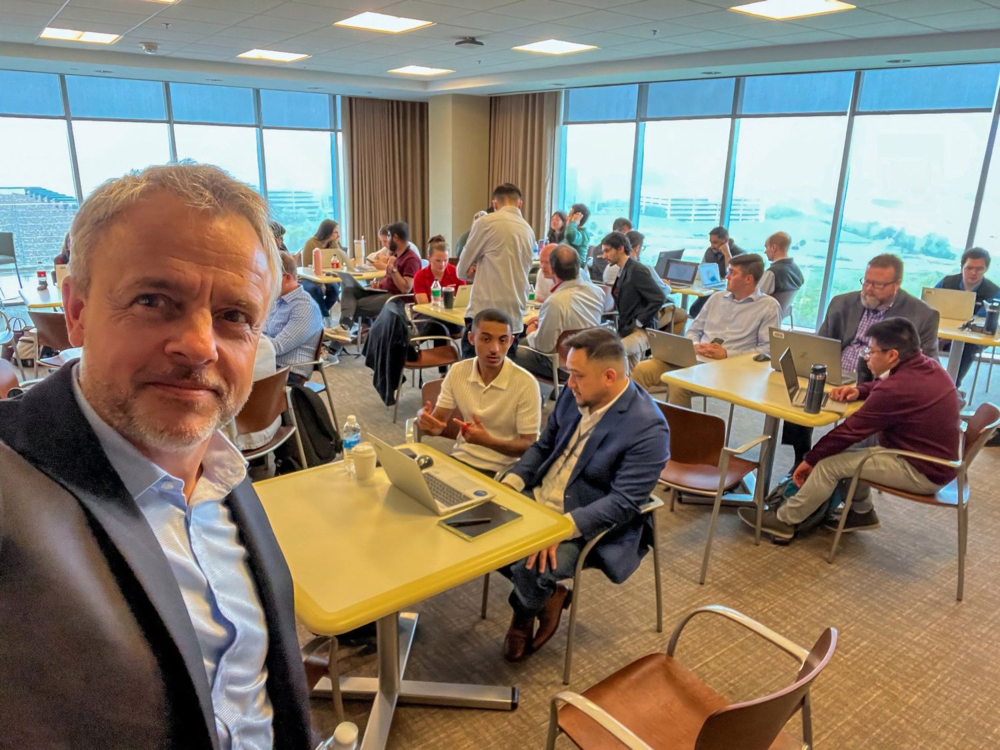
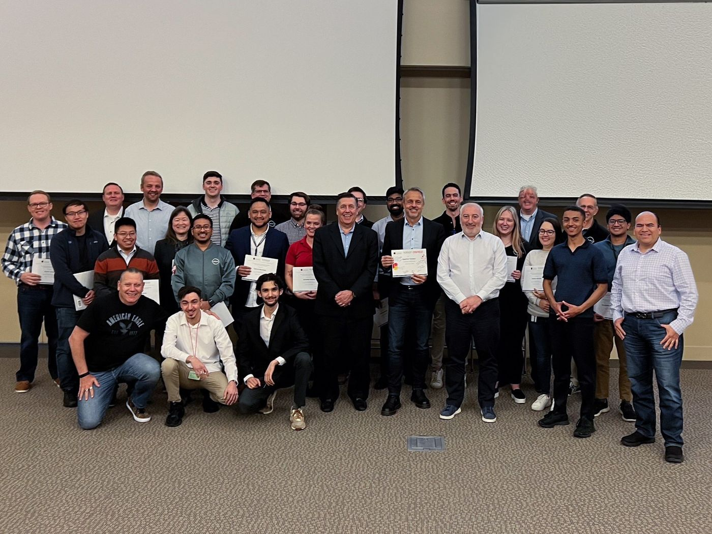
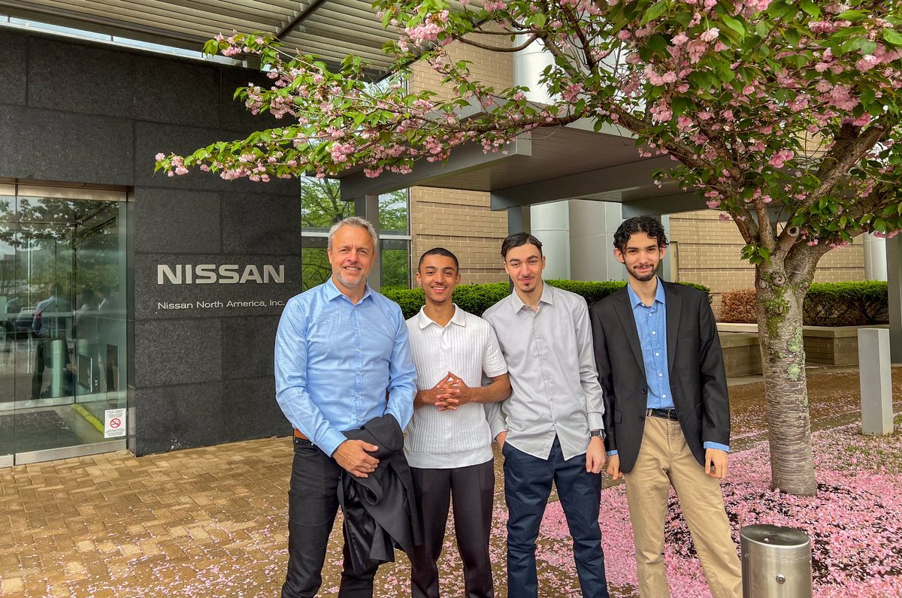
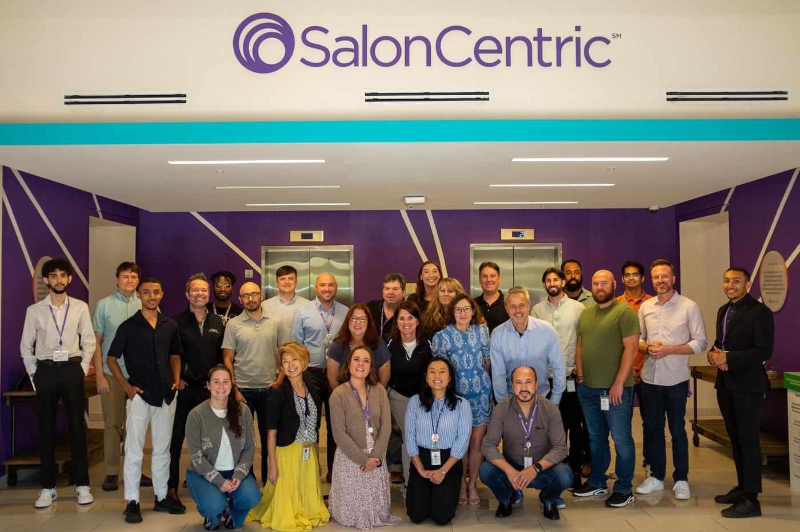
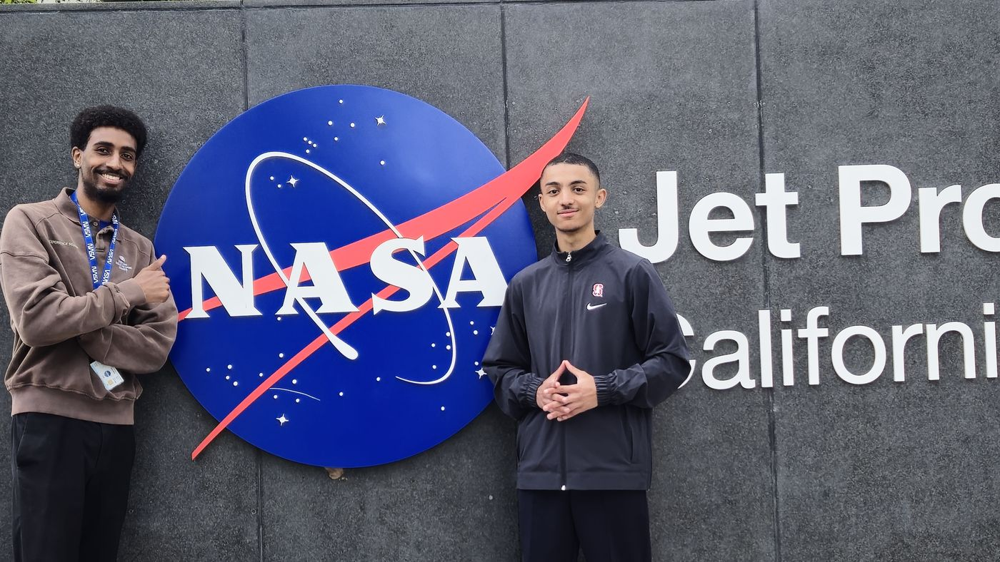

Stanford Continuing Studies
I co-taught AI and automation to an international audience of working professionals.
Chapter 04 · Teaching
Alongside my work I teach generative AI: to managers at Nissan and L'Oréal, to professionals at Stanford Continuing Studies, to computer science students at my former university, and to young people in Trappes through OSMOZ, the non-profit I co-founded.
Teaching assistant, co-instructor, speakerUnited States and FranceSince 2023
The course list
| Where | Who was in the room | What I did | When |
|---|---|---|---|
| NissanNashville, United States | Managers, with Data Wise Academy and Gauthier Vasseur | Coached managers through a three-day generative AI hackathon | 2024 – 2025 |
| L'Oréal / SalonCentricUnited States | Managers, with Data Wise Academy | Same three-day format | 2024 – 2025 |
| Stanford Continuing StudiesInternational audience | Working professionals | Co-instructor, AI and automation | 2024 – 2025 |
| IUT d'OrsayUniversité Paris-Saclay | Computer science students, where I studied | Guest talk, "AI and the Future of Software Engineering" | 2025, 2026 |
| OSMOZTrappes, France | Young people from working-class neighbourhoods, and anyone curious | Co-founder. Workshops, hackathons and talks on AI and data | Since 2023 |
| DigitekaParis | All my colleagues | Company-wide training on agents, then one-to-one coaching. See chapter 03 | May 2026 |
Nissan · one lesson
The same task7 hours a week5 minutes
A finance manager at Nissan told me about a task that came back every morning: reshaping a file of several million rows before the real work could begin. It took up to seven hours a week.
During the training it became a notebook, written with generative AI. The same job now takes about five minutes. That is what I like about this format: people leave with something that works on their own files.




I co-taught AI and automation to an international audience of working professionals.
A talk on AI and the future of software engineering, given in 2025 and 2026 to computer science students in the department where I studied.
Corporate programmes led by Gauthier Vasseur. I coach managers during three-day hackathons on generative AI applied to data.
Trappes · since 2023
OSMOZ is a non-profit I co-founded with teammates from C du Propre, the project we won KESK'IA with. We open AI and data to young people from working-class neighbourhoods, and to anyone else who wants in.
